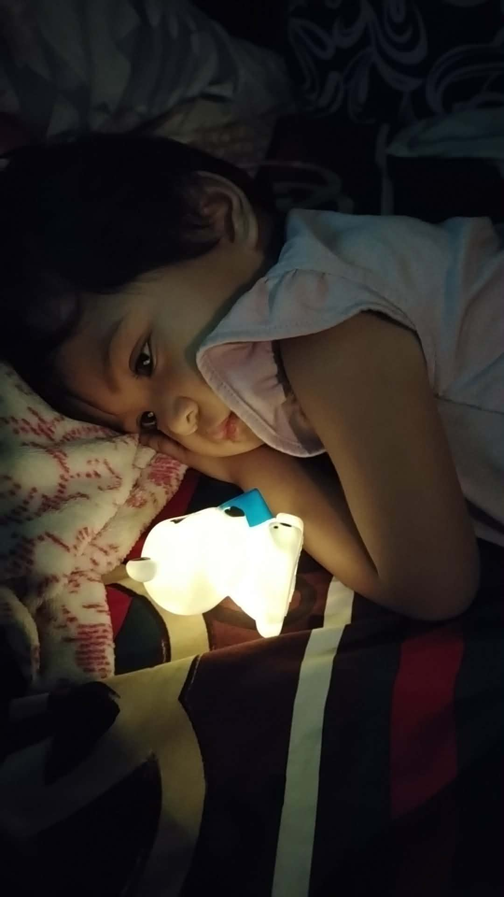
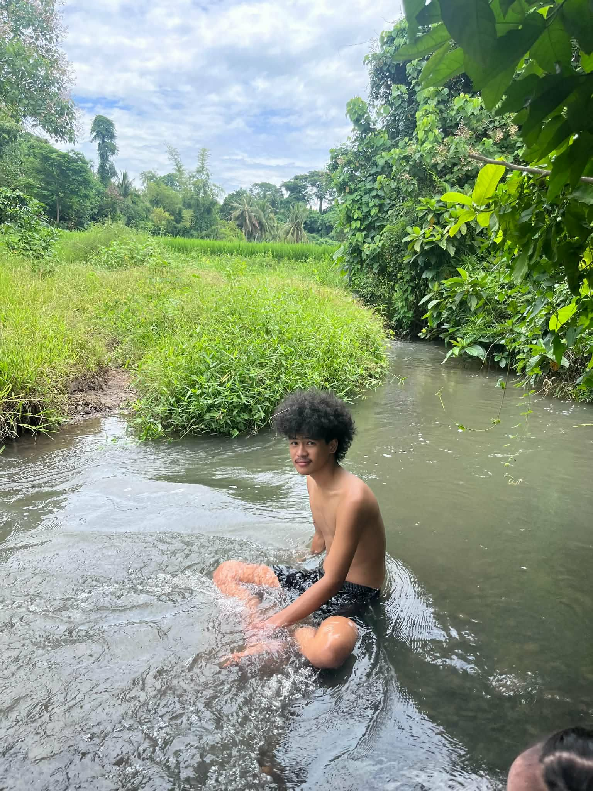
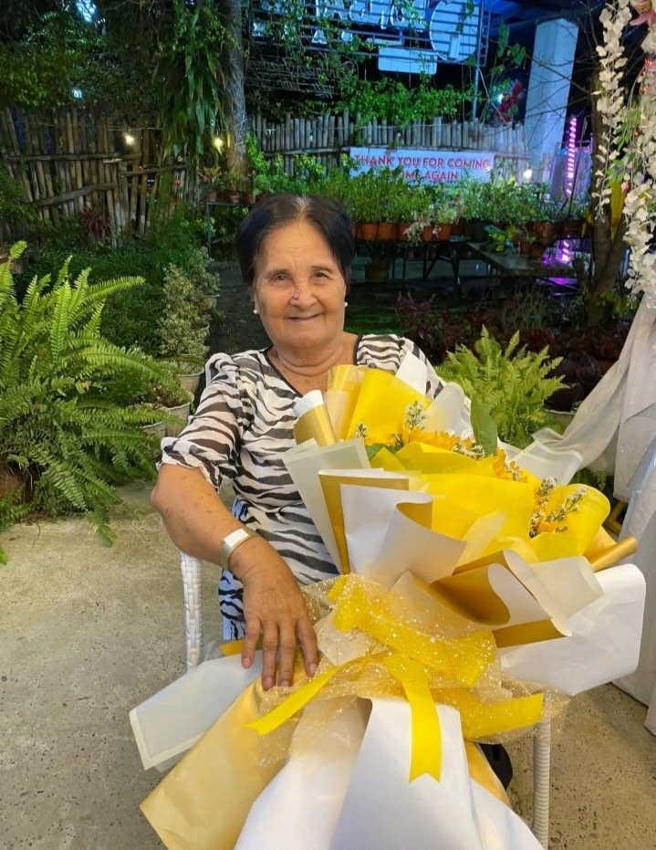

HELLO, I'M KATE
Hi, I'm Kate.
Here’s a glimpse of who I am.
I’m Kate Escano, a first-year BSIS student. This page gives you a brief introduction to who I am, what I study, and a few things about me.
First-year BSIS student · still learning and growing


